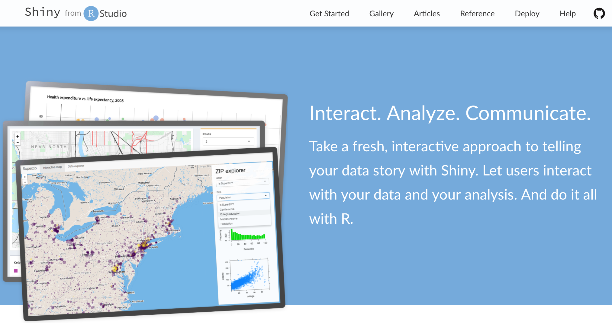

2017-08-29
I am excited to announce the redesign and reorganization of shiny.rstudio.com, also known as the Shiny Dev Center. The Shiny Dev Center is the place to go to learn about all things Shiny and to keep up to date with it as it evolves.

The goal of this refresh is to provide a clear learning path for those who are just starting off with developing Shiny apps as well as to make advanced Shiny topics easily accessible to those building large and complex apps. The articles overview that we designed to help navigate the wealth of information on the Shiny Dev Center aims to achieve this goal.
Other highlights of the refresh include:
Stay tuned for more updates to the Shiny Dev Center in the near future!